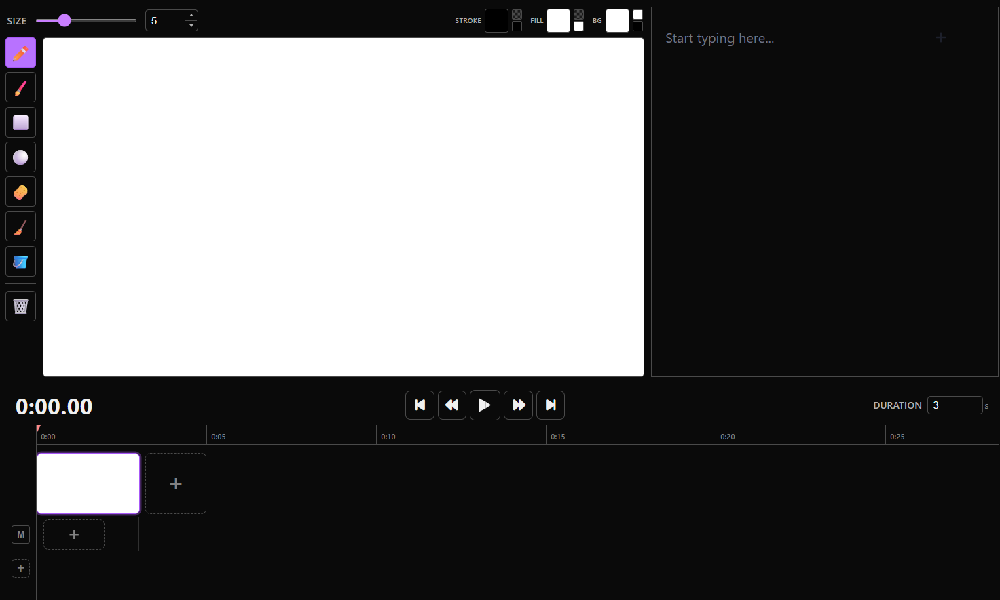

QuickBoard is an application meant to make the storyboarding process simple and intuitive. No extra bells and whistles. No unnecessary chatbots. Just you and the boards.
Visualizing
QuickBoard makes use of the LiterallyCanvas library to give the user an easy-to-use canvas for their storyboarding workflow. The provided tools are what you would expect: pencil and brush tools, circle and square pre-set shapes, object- and pixel-erasers, and a bucket fill.
Scripting
To the right of the canvas is QuickBoard's script box, where users can keep track of each board's dialogue and any other pertinent text information. New setting? Notes for future frames? Those all go here.
Key Frames
At the bottom of the QuickBoard layout, users can find the timeline tool. Here, you can flip between all of your boards or play them out according to your specifications for easier visualization. In addition, users can also add their own audio tracks (up to 4 consecutive tracks) to the mix as well.
Ease of Access
In an effort to make QuickBoard as intuitive and reliable as possible, all storyboards will be stored locally on the user's device. This means that users have no need to worry about things like their cloud storage going down, or their work being used without their consent.
If you enjoyed using QuickBoard, or have suggestions for additions in future releases, please fill out our short survey. All input is greatly appreciated!